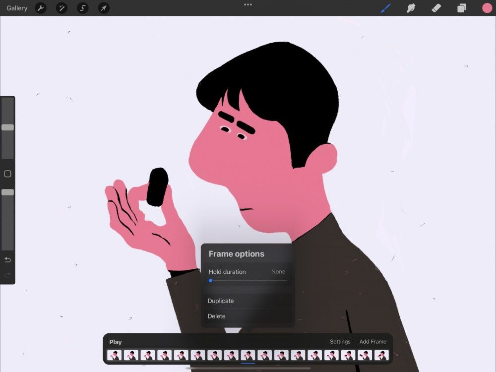
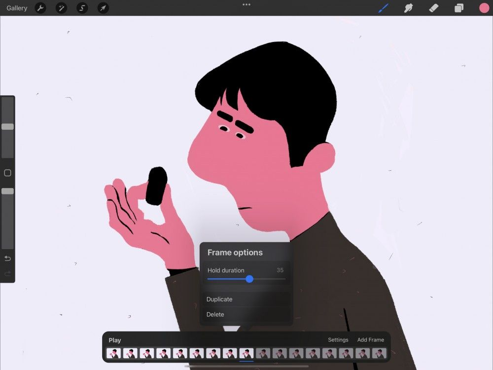
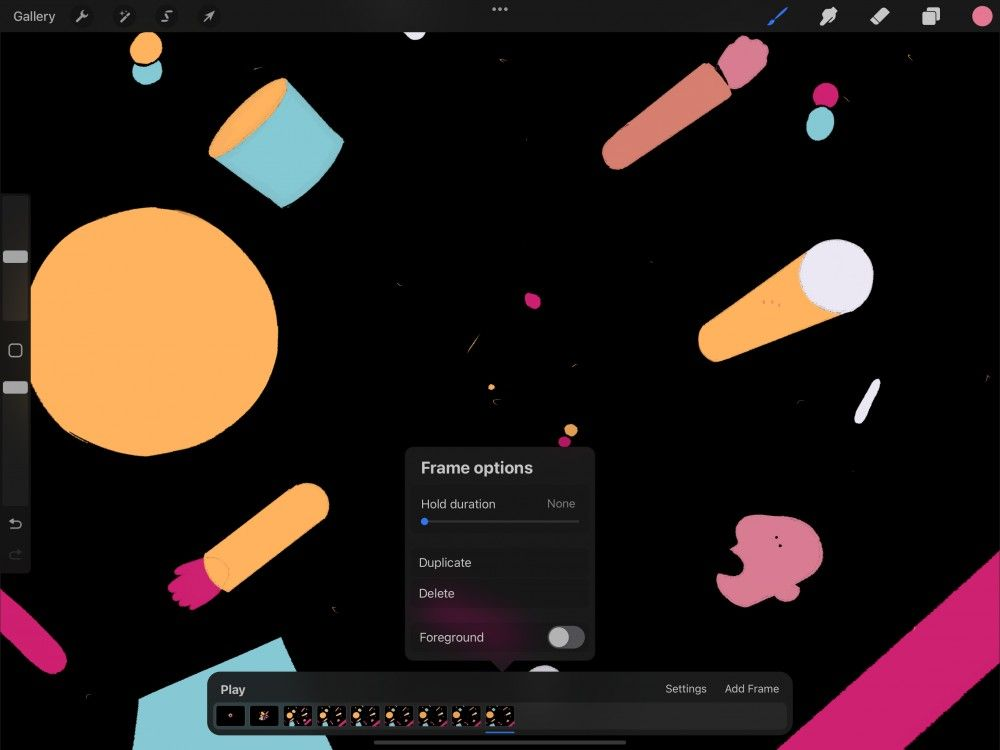
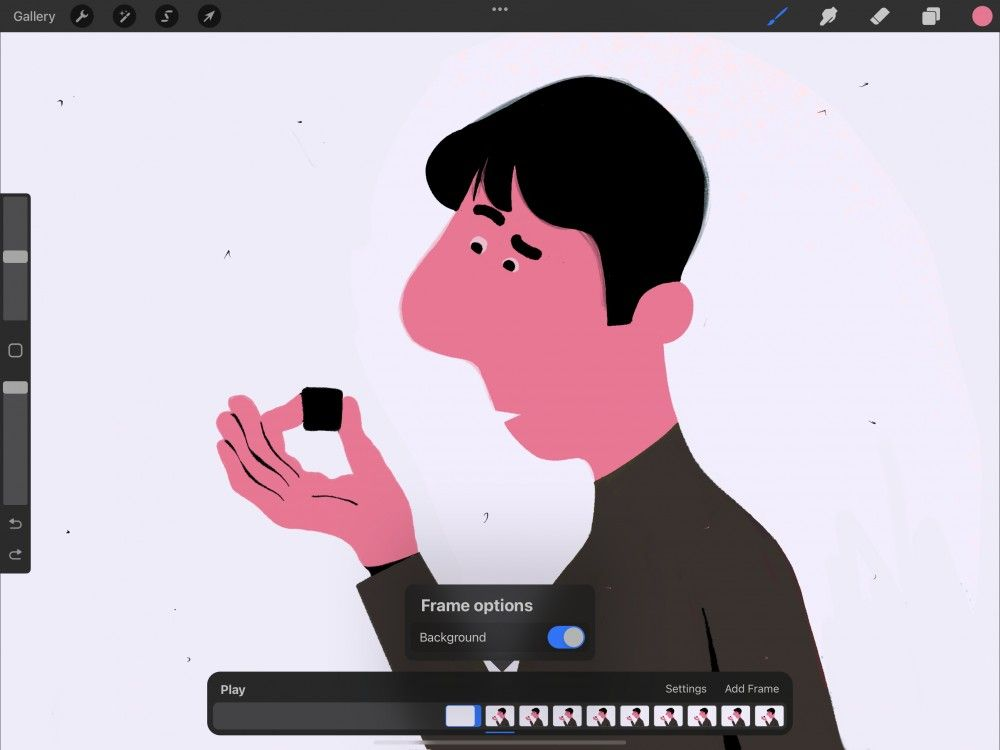

📖 Đã dịch sang tiếng Việt. Thuật ngữ chuyên môn giữ tiếng Anh — rê chuột để xem nghĩa (tooltip).
Options
Truy cập và điều chỉnh tùy chọn cho từng frames của hoạt hình.
Tùy chọn Frame
Giữ (Hold), nhân đôi (Duplicate) và xóa (Delete) các frames trong Timeline hoạt hình.


Chạm một frames trong Timeline để chọn, rồi chạm lần nữa để mở menu Frame options.
Menu này điều khiển các thiết lập ảnh hưởng đến từng frames riêng trong hoạt hình.
Để đổi thiết lập cho toàn bộ hoạt hình và giao diện Animation Assist, xem phần Settings.

Thời gian giữ (Hold Duration)
Tạo khoảng nghỉ trong chuyển động bằng cách điều chỉnh một thanh trượt đơn giản để giữ một bản vẽ trong nhiều frames.
Trong hoạt hình, một ‘lần giữ’ tạo khoảng nghỉ bằng cách phát cùng một bản vẽ qua nhiều frames. Càng nhiều frames được giữ, hình ảnh càng đứng yên lâu hơn. Hoạt hình dùng ‘lần giữ’ để điều chỉnh nhịp độ và tiết tấu.
Kéo thanh trượt Hold duration đến số frames mong muốn, tối đa 120.
Pro Tip
You can figure out your hold duration using trial and error. Do this by watching the playback and adjusting your hold until it looks right. Or, you can use math to figure your hold duration out. For example, if an animation runs at 12 frames per second, then a one-second hold should be set to 12 frames.
Timeline thể hiện lần giữ của bạn dưới dạng chuỗi frames mờ đi. Nếu lần giữ kéo dài 5 frames, bạn sẽ thấy 5 frames mờ trong Timeline.
Bạn có thể bỏ lần giữ bằng cách kéo thanh trượt trở lại None (không).
Nhân đôi / Xóa
Nhanh chóng nhân đôi hoặc gỡ bỏ một frames.
Chạm một frames để chọn, rồi chạm lần nữa để mở Frame Options.
Chạm Duplicate (nhân đôi) để tạo bản sao của frames đang chọn bên cạnh nó trong Timeline. Hoặc để gỡ một frames, chạm Delete (xóa).
Hoàn tác tùy chọn nào bằng cách chạm hai ngón tay.

Cảnh trước (Foreground) của hoạt hình
Tạo một lớp cảnh trước (foreground) nổi, bị khóa cho hoạt hình.
Foreground (cảnh trước) khóa một frames ở vị trí cố định làm phần tử cảnh trước nhất quán. Cảnh trước này sẽ xuất hiện phía trên mọi frames khác của hoạt hình.
Trong Timeline, chạm frames tận cùng bên phải để mở Frame Options. Chạm công tắc Foreground.
Bạn chỉ có thể gán frames tận cùng bên phải làm Foreground. Cũng như chỉ có một Foreground tại một thời điểm. Hãy chuyển bất kỳ frames nào đến vị trí tận cùng bên phải để đặt làm Foreground.
Tất cả lớp tạo sau sẽ xuất hiện bên trái frames Foreground và không thể di chuyển qua nó. Tương tự, nội dung của các frames này luôn bị che bởi nội dung của frames Foreground.
Trong bảng Layers, Foreground bị khóa ở vị trí trên cùng và không thể kéo xuống dưới các lớp khác.
Chạm lại công tắc Foreground để chuyển frames Foreground trở lại thành frames bình thường.

Cảnh nền (Background) của hoạt hình
Tạo một lớp cảnh nền (background) nằm dưới, bị khóa cho hoạt hình.
Background (cảnh nền) khóa một frames ở vị trí cố định làm phần tử cảnh nền nhất quán. Nó sẽ xuất hiện bên dưới mọi frames khác của hoạt hình.
Trong Timeline, chạm frames tận cùng bên trái để mở Frame Options, sau đó chạm công tắc Background.
Chỉ frames tận cùng bên trái mới có thể được gán làm Background. Bạn cũng chỉ có một Background tại một thời điểm. Hãy chuyển bất kỳ frames nào đến vị trí tận cùng bên trái để đặt làm Background.
Tất cả lớp tạo sau xuất hiện bên phải frames Background và không thể di chuyển sang bên trái nó. Tương tự, nội dung của các frames này luôn che phủ nội dung của frames Background.
Trong bảng Layers, Background bị khóa ở vị trí dưới cùng và không thể kéo lên trên các lớp khác.
Chạm lại công tắc Background để chuyển frames Background trở lại thành frames bình thường.
Still have questions?
If you didn't find what you're looking for, explore our video resources on YouTube or contact us directly. We’re always happy to help.